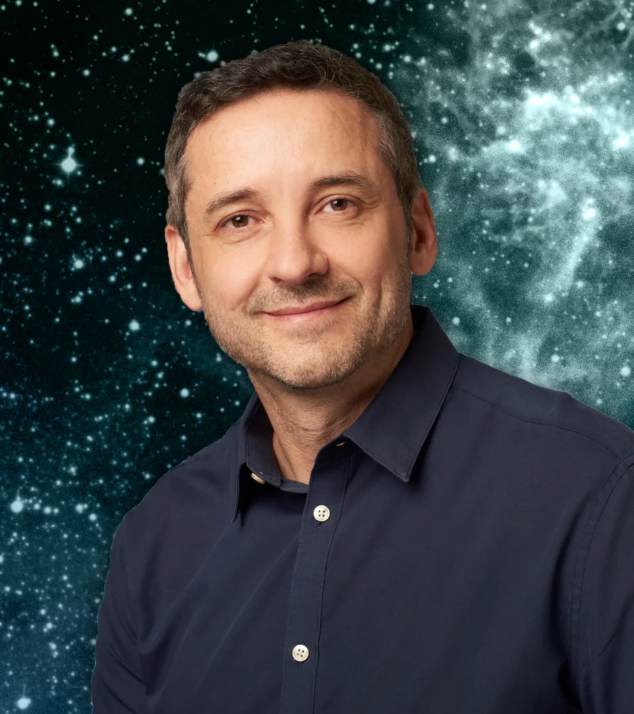

Andrés Rieznik
Física · Neurociencia · Educación«La voz de la razón es suave
pero persistente.»

Novedad
Enseñar. El ABC de la alfabetización
Un libro sobre por qué muchos chicos no aprenden a leer y a resolver operaciones básicas, y cómo la evidencia científica puede transformar la manera de enseñar. Ediciones B, 2026.
Ver libros →Últimos artículos
Ver todos los artículos →Noticias y agenda
Ver todo →


Libros
Ver todos →
Kalulu
Un método gratuito y científico para enseñar a leer
Andrés forma parte del equipo de Kalulu, un proyecto de ciencia ciudadana que lleva a las escuelas un método de alfabetización basado en evidencia.
Conocer el proyecto
Contacto
Redes y contacto
Mis redes
Podés seguir el trabajo de divulgación en estas plataformas.
Si me querés contactar
Para consultas profesionales, prensa o propuestas.